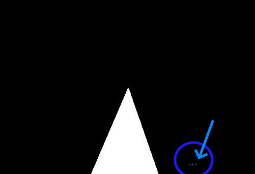

In this post, I am going to talk about how I was developing and testing the algorithm from Unibotics called, Follow Line
This exercise consists of a car controlled by a camera, that has to follow a red line in the middle of a circuit.
Being able only to control two aspects of it. The Velocity and the Angular turn of the wheels.
Some musts about how robotic vision works
It is important to know some basics of this concrete system.
This system is a closed system in which a loop is executed every time, trying to get the obtained error minimize as much as possible.
The procedure is manage thanks to 3 controllers
Controllers:
- Proportional (P): Correction is applied to the controlled variable is proportional to the difference between the desired value and the measured value, the error.
- Integral (I): The system is able to correct the error once it reachs a verge. Deleting the offset
- Derivative (D): When the error is minimizing is must be controlled in another way than when it is growing
System development:
Every system must be develop step by step, in order to get the best functionality possible.
From now on, I will be showing all this steps, but also, commenting my own experience through them.
Fist of all, is important to know from what detection is going to be obtained the error. Then it is time to go though the following steps:
Proportional controller:
With this formula, we are going to set the angular velocity for the robot, it is important to set the value of Kp (Proportional constant).
That constant multiplies by the error making the robot turns more or less sharply depending on the result of the formula above.
It is important to know how does the value of this constant affects:
- The higher the value is, the sharp the oscillation of the robot.
- Meanwhile, if this value is low, the robot reaction might be late, and it will miss the line so often.
Derivative controller:
In this case, we will have to set the value of Kd (Derivative constant).
That constant is multiply by the derivative of the error, but, to set that derivative in python, we have to get the different between the error in the current frame, and the error in the previous one.
The obtained value makes the reaction of the robot to get a smoother oscillation if the derivative is low, on the other hand, if this value is high, the robot will oscillate roughly to mantain the route
Proportional and Derivative controller:

This is the controller formula used in this exercise. It is a combination of the two previous ones.
Integral controller:
In this case, we will have to set the value of Ki (Integral constant).
The performance of this formula is to delete offsets, if those offsets are mantained during some time to get to the point we want.
Calculate an integral in coding consists of a sum of the error for a period of time.
The PID controller:
This is the most complete PID system formula. It contains all the simple three ones.
With all this being said, the main goal is to set the values of the two constants of the PD formula, that minimize the error of the system.
Algorithm development
How to obtain the image and preproccessing
At first, when you get into Unibotics, Follow line exercise, you will see this code:
from GUI import GUI
from HAL import HAL
while True:
HAL.getImage()
HAL.setW()
HAL.setV()
GUI.showImage()
In the code above we can see the basics to operate this exercise, as we have how to get the image, how to set angular velocity and velocity and how to return the image
So, first of all is to obtain the path we want the car to follow, that is the red line in the middle.
We, as human beings, have the capacity to understand what we are seeing in most situations, specifically this one is very simple,
but a computer or robot without any guidance does not know how to proceed. So, that is why, it is necessary to proceed as follows.
The next step is to extract only the red part(s) of the image, because the robot must follow one of them.
We will be covering the exceptions afterwards, like for example, what happens when there is no red line or the robot miss this reference?
Above is the threshold view of the circuit, it is clear to see what path the robot is following.
When the path is differentiated from the rest of the circuit, a good continue is to go back to the default view but now with the path countour drawn.
Finding the reference point to get the error and apply the formula
Now, it is time to look for some reference points, so that we can return the variable error for the PDI formula.
In the first try I decide to use the centroid of the contour as the reference to get the error in each loop, did not resulted as expected.
The robot reaction was always delayed, making the car oscillates a lot during even the straights parts of the circuit.
In the next attemp, I decided to do the same as I did with the centroid but now, with the upper point of the contour, but did not work as well.
The problem with this reference point consists of the displacement of the car through the circuit, but also it has some problems with rapid oscillations.
Then, I decided to look for the point between the previous two, because this point is between the point when the robot is and the one the robot might go in the near future.
I did the same process for the three points like the one shown now. The line is conected to the pixel of the middle of the frame, making the length of that line the error, which is used in the formula.
In summary, the longer the line is, the higher the error, and, that means, the value of the formula. On the other hand, if this length is short, the formula has a lower value making the robot get stable.
To get the difference of the error, i just save the current error in a variable to subtract it from the next error value, letting the robot get into position with less oscillations.
I use the same variable to add it to the next error value, this help us to delete the error if it maintains constant or gets higher.
After some tryout I get to a range of values for Kp, Kd and Ki, in which the robot can make a good trace.
So, at this point I was able to complete a lap at a constant low speed. So, it is time to develop how the speedometer is going to work.
How robot velocity works
Speed increase slowly when the difference between current frame error and the previous one is low. It increase faster when the actual error in the current frame is 0, in most cases that means the robot is in a straight line.
On the other hand, there are two cases. The first one, consists of decreasing speed when the difference in the last two frames error is high,
it also has an even higher speed decrease, when the current error is too high, almost a quarter of pixels of the frame. Making the robot re-establish quicker, as expected.
At the end, the robot achieve to stablish around a similar range of values adjusting the speed by itself, and can manage to continue driving around the circuit indefinitely.
Experiments
In this section of the post I am going to explain some problems and experiments I found during the development of the exercise.
Missing reference
We all may think about what should happend in this situation, in my own, I found two different problems when it cames on missing reference.
Normally robot miss reference is caused by high oscillation or high speed, high oscillation can be solved adjusting the formula constants as much as we can, but speed depends on something else as shown.
-
Missing reference, not detecting any other red in the frame
This is the easy case in which we can get involved. It is solved first of all, stopping the car and then by reviewing the last frame error value, making the car turns in its own place, until a new path detection is found.
In this case, to avoid the robot lose reference again, the speed get reduce while there is no detection found. Making it possible to return to the path easily, and with less ocillations. -
Missing reference but detecting some red in the frame
This case is similar to the one above but with little variation from the previous point.
There can be along the circuit some little red spots, it is not the case of this exercise specifically, but as you can see in the image below a small red spot is detected.
The solution for this was to look how small can the contour be in the worst situation, like a high deviation in a curve, and then avoiding the robot going to a point smaller than that.

Constant speed
In the video below, can be see a timelapse of a 5:30 minute ride around the circuit in a low speed.
The robot is able to keep a very good trace of the red line
Upgrading speed, starting from 0
In the next video, we can see the behavior of the robot when it starts at 0 speed. This speed will increase until it stabilizes. Like it was said before.
Conclusions
Many tests have been done to improve the algorithm performance. The PD controller vs the PDI seems to be the same when it comes to timing laps, I can't really spot any difference, the opposite happens when I implement the D in the P controller.
For the Kp value: if it is too high the robot twists so much, if it is too low, the robot can't even turn.
For the Kd value: it needs to be in a accepted range, otherwise the robot will oscillate so much.
For the Ki value: the only thing I can spot is that, if the curve is long the error tend to get smaller and gets the robot to oscillate a bit.
About the speed: the robot is able to do a good performance until it start speeding faster than 5, I set a max value for speed to around 5,5 to avoid it getting out of the line.